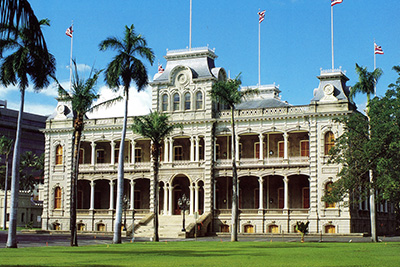
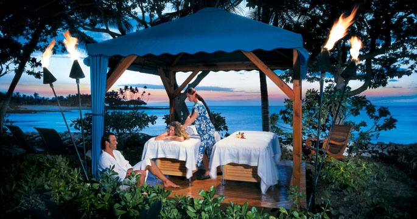

36 Hours in Honolulu
 The name Honolulu can conjure up frenzied activity: exploring the sea with electric scooters,
high-altitude extreme parasailing, close encounters with sharks, 40-miles-per-hour motorboat rides that
guarantee you will get wet. But Honolulu can also mean mellow: the fragrance of a custom-made orchid lei,
the taste and texture of a perfect tuna sashimi slice, the elegance of a hula dancer, the deepening of the
blues and greens of the sea as the sun sets. Even the steel-mesh netting to prevent falling rocks is
partly hidden so as to blend with the landscape. Then there is the pace, the feeling that no one is ever
too rushed to give you directions, take your dinner order or explain the history of a 100-year-old banyan tree.
The name Honolulu can conjure up frenzied activity: exploring the sea with electric scooters,
high-altitude extreme parasailing, close encounters with sharks, 40-miles-per-hour motorboat rides that
guarantee you will get wet. But Honolulu can also mean mellow: the fragrance of a custom-made orchid lei,
the taste and texture of a perfect tuna sashimi slice, the elegance of a hula dancer, the deepening of the
blues and greens of the sea as the sun sets. Even the steel-mesh netting to prevent falling rocks is
partly hidden so as to blend with the landscape. Then there is the pace, the feeling that no one is ever
too rushed to give you directions, take your dinner order or explain the history of a 100-year-old banyan tree.
Friday
- Royal Digs | 2 p.m.
Who knew that Iolani Palace, the home of Hawaiis king and queen once upon a time, is the only official
royal palace in the United States? In 1882 King Kalakaua and Queen Kapiolani moved into their newly built
official residence, done in a unique American Florentine style. Fitted with telephones and electricity
even before the White House, it was richly decorated with koa and other native woods. The king and queen
were heads of state in their time, receiving foreign dignitaries and being received in places like
Buckingham Palace. After the overthrow of the monarchy, Iolani Palace became a government building and a
museum to explore.
- A spa without walls | 4 p.m. 
There Is nothing better than a summer moment at Kapiolani Park, the 300-acre recreational magnet at the
foot of Diamond Head, the volcanic tuff cone and landmark the Hawaiians named Leahi. Work up a sweat
with the joggers and rugby players while white terns soar above the ironwoods. Top that off with a sunset
swim across the street, at the beach fronting the New Otani Kaimana Beach Hotel.
Justė Griškonytė